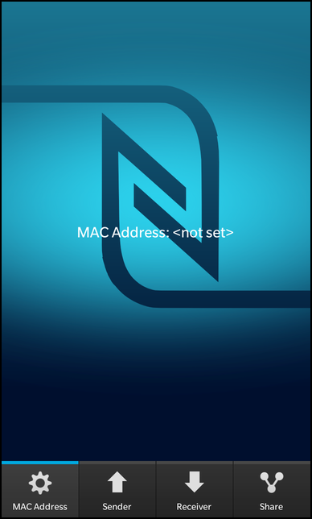
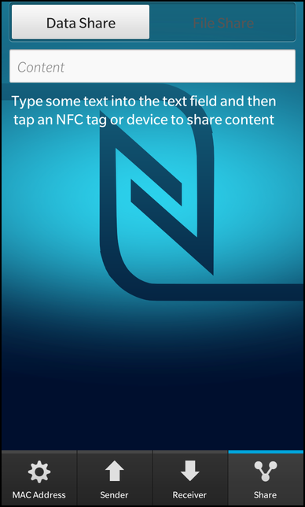
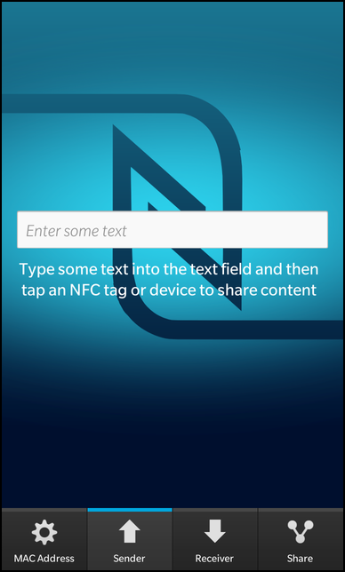

Files:
The nfc example allows a user to exchange content, such as messages or files with another NFC enabled device, or just to simply read data from NFC tags.



In this example we'll learn how to use the NfcShareManager to share data and files by tapping NFC enabled device or NFC tag. Concurrently, we will also demonstrate data sharing(SNEP protocol) using the BPS library.
The UI of this sample application consists of 4 tabs that represent different functionality: 'MAC Address', 'Sender', 'Receiver', and 'Share'.
MAC Address
// The label that shows the MAC address Label { horizontalAlignment: HorizontalAlignment.Center verticalAlignment: VerticalAlignment.Center text: qsTr("MAC Address: %1").arg(_macAddressHandler.macAddress) textStyle { base: SystemDefaults.TextStyles.BodyText color: Color.White } }
This tab contains a label which updates with the MAC address of the remote NFC enabled device that you tap. This exchange is done upon sensing a NFC target and successfully establishing a NFC connection.
Sender
// The input field for the NDEF message payload TextField { inputMode: TextFieldInputMode.Text hintText: qsTr("Enter some text") onTextChanging: { _nfcSender.payload = text } } // Guide message to display to the user Label { text: qsTr("Type some text into the text field and then tap an NFC tag or device to share content") multiline: true textStyle { base: SystemDefaults.TextStyles.BodyText color: Color.White textAlign: TextAlign.Center } }
This tab contains a TextField and a Label with the usage description. Once the user enters some text into the field, this data will be shared with another NFC enabled device, or written to an NFC tag (through tag writing).
Receiver
// The list view that shows the records of the received NDEF message ListView { horizontalAlignment: HorizontalAlignment.Fill verticalAlignment: VerticalAlignment.Fill dataModel: _nfcReceiver.messageRecords listItemComponents: [ ListItemComponent { type: "" Container { preferredWidth: 768 leftPadding: 10 rightPadding: 10 Field { title: qsTr("tnf type") value: ListItemData.tnfType == "0" ? qsTr("Empty Tag") : ListItemData.tnfType == "1" ? qsTr("Well Known Type") : ListItemData.tnfType == "2" ? qsTr("Media (MIME)") : ListItemData.tnfType == "3" ? qsTr("Uri") : ListItemData.tnfType == "4" ? qsTr("External") : "" } Field { title: qsTr("record type") value: ListItemData.recordType == "Sp" ? qsTr("Smart Poster") : ListItemData.recordType == "T" ? qsTr("Text") : ListItemData.recordType == "U" ? qsTr("Uri") : ListItemData.recordType == "Gc" ? qsTr("Generic Control") : ListItemData.recordType == "Hr" ? qsTr("Handover Request") : ListItemData.recordType == "Hs" ? qsTr("Handover Select") : ListItemData.recordType == "Hc" ? qsTr("Handover Carrier") : ListItemData.recordType == "Sig" ? qsTr("Signature") : "" } Field { title: qsTr("payload") value: ListItemData.payload } Field { title: qsTr("hex") value: ListItemData.hexPayload } } } ] }
This tab is intended to display the properties of the NDEF message, which is shared via some NFC tag, or shared data from another NFC enabled device. The NDEF message records, containing the property information, are displayed through a ListView.
Share
This tab is used to share data or files by using the NfcShareManager, this being an alternative to the BPS library used in the other tabs to achieve the same functionality. The page contains a TextField for data input or uses a FilePicker to select the file(s) to be shared.
We export all the C++ classes corresponding to the above mentioned functionalities into QML, under their respective names "_macAddressHandler, _nfcReceiver, _nfcSender, and _nfcShareHandler" as context property insode the main.cpp function.
QmlDocument *qml = QmlDocument::create("asset:///main.qml").parent(&app); qml->setContextProperty("_macAddressHandler", new MacAddressHandler(&app)); qml->setContextProperty("_nfcReceiver", new NfcReceiver(&app)); qml->setContextProperty("_nfcSender", new NfcSender(&app)); qml->setContextProperty("_nfcShareHandler", new NfcShareHandler(&app));
Inside the QML pages for each tab, we simply bind the properties of the labels, text fields or data models to their corresponding exported properties. Which invokes automatically the functionality upon user interaction or the display of received data. For example, in the Sender page the onTextChanging handler assigns the text from the TextField to the "_nfcSender.payload" property, the payload(data) in turn is pushed to another NFC device upon establishing a connection.
This class is tasked with the acquisition of the MAC address, it does so using the Bps library by initializing it, registering with the nfc domain and dealing with the nfc handover to acquire the mac address.
void MacAddressHandler::initialize() { bps_initialize(); subscribe(nfc_get_domain()); const int rc = nfc_request_events(); if (rc == NFC_RESULT_SUCCESS) { qDebug() << "[INFO] Request NFC Events: NFC_RESULT_SUCCESS" << endl; } else { nfc_stop_events(); unsubscribe(nfc_get_domain()); bps_shutdown(); qDebug() << "[ERRO] Request NFC Events: NFC_RESULT_FAILURE" << endl; } nfc_register_handover_listener(BLUETOOTH_HANDOVER); }
This snippet does the initial Bps initialization for use with the current thread and registers with the NFC domain in order to receive nfc events, plus it registers the bluetooth handover listener.
void MacAddressHandler::handleNfcHandoverDetectedEvent(nfc_target_t *target) { nfc_confirm_handover_process(target, true); qDebug() << "[INFO] Confirmed Handover" << endl; } void MacAddressHandler::handleNfcHandoverCompletedEvent(nfc_target_t *target) { handover_transport_type_t transport; nfc_get_handover_transport(target, &transport); nfc_bluetooth_handover_data_t bluetooth_data; nfc_get_bluetooth_handover_data(target, &bluetooth_data); // The MAC address is in little-endian order const unsigned char *macAddr = bluetooth_data.mac_address; m_macAddress.sprintf("%02x:%02x:%02x:%02x:%02x:%02x", (unsigned int) macAddr[5], (unsigned int) macAddr[4], (unsigned int) macAddr[3], (unsigned int) macAddr[2], (unsigned int) macAddr[1], (unsigned int) macAddr[0]); emit macAddressChanged(); qDebug() << "[INFO] MAC ADDRESS: " << m_macAddress << endl; }
Once the handover has been confirmed and completed, the bluetooth handover data is parsed specifically to extract the mac address value. Which is than formatted into a QString for display by emiting the macAddressChanged() signal, with the string as its argument.
The following class is responsible for sending a text payload, using the NFC SNEP push protocol, to another NFC enabled device, or to write to an NFC tag.
void NfcSender::initialize() { bps_initialize(); subscribe(nfc_get_domain()); const int rc = nfc_request_events(); if (rc == NFC_RESULT_SUCCESS) { qDebug() << "[INFO] Request NFC Events: NFC_RESULT_SUCCESS" << endl; } else { nfc_stop_events(); unsubscribe(nfc_get_domain()); bps_shutdown(); qDebug() << "[ERRO] Request NFC Events: NFC_RESULT_FAILURE" << endl; } nfc_register_snep_client(); }
This code does the Bps initialization for use with the current thread and subscribes to receive NFC events and registers as a snep client.
void NfcSender::event(bps_event_t *event) { uint16_t code = bps_event_get_code(event); nfc_event_t *nfc_event = 0; if (nfc_get_nfc_event(event, &nfc_event) != BPS_SUCCESS) { qDebug() << "[ERRO] Get NFC event: BPS_FAILURE" << endl; } nfc_target_t *target = 0; nfc_get_target(nfc_event, &target); switch (code) { case NFC_SNEP_CONNECTION_EVENT: { qDebug() << "[INFO] Received NFC_NDEF_PUSH_EVENT" << endl; handleSnepPush(target); } break; case NFC_NDEF_PUSH_SUCCEED_EVENT: { qDebug() << "[INFO] Received NFC_NDEF_PUSH_SUCCEED_EVENT" << endl; } break; case NFC_NDEF_PUSH_FAILURE_MSG_OVER_SIZE_EVENT: { qDebug() << "[ERRO] Received NFC_NDEF_PUSH_FAILURE_MSG_OVER_SIZE_EVENT" << endl; } break; case NFC_NDEF_PUSH_FAILURE_REJECTED_EVENT: { qDebug() << "[ERRO] Received NFC_NDEF_PUSH_FAILURE_REJECTED_EVENT" << endl; } break; case NFC_NDEF_PUSH_FAILURE_IO_ERROR_EVENT: { qDebug() << "[ERRO] Received NFC_NDEF_PUSH_FAILURE_IO_ERROR_EVENT" << endl; } break; default: { qDebug() << "[WARN] Event not handled: " << code << endl; } break; } nfc_destroy_target(target); }
This method listens to the NFC events, and upon receiving a successful NFC SNEP connection it invokes the handleSnepPush() method to deal with sending the data.
void NfcSender::handleSnepPush(nfc_target_t *target) { nfc_ndef_message_t *ndef_message; nfc_create_ndef_message(&ndef_message); nfc_ndef_record_t *record; const char* record_type = "text/plain"; const uchar_t *payload = (const uchar_t *)m_payload.toUtf8().constData(); //TODO: Kind of sketchy. const int payload_length = m_payload.toUtf8().length(); nfc_create_ndef_record(NDEF_TNF_MEDIA, record_type, payload, payload_length, 0, &record); nfc_add_ndef_record(ndef_message, record); nfc_push_ndef_message(target, ndef_message); nfc_delete_ndef_message(ndef_message, true); }
This method creates a ndefrecord that houses the payload (data), this record is than added to a standard ndefmessage which is than pushed to the other device using the SNEP protocol.
This class retrieves the NdefMessage being transmitted, extracts its properties and displays them on the screen.
NfcReceiver::NfcReceiver(QObject *parent) : QObject(parent) , m_messageRecords(new bb::cascades::QVariantListDataModel()) { m_messageRecords->setParent(this); // Create an InvokeManager bb::system::InvokeManager *invokeManager = new bb::system::InvokeManager(this); /** * The signal invoked(const bb::system::InvokeRequest&) is used for applications. */ connect(invokeManager, SIGNAL(invoked(const bb::system::InvokeRequest&)), this, SLOT(receivedInvokeTarget(const bb::system::InvokeRequest&))); }
Inside the constructor the InvokeManager is initialized, from whom we listen for invoke requests.
void NfcReceiver::receivedInvokeTarget(const bb::system::InvokeRequest& request) { // The data contains our NDEF message const QByteArray data = request.data(); // Create out NDEF message const QtMobilitySubset::QNdefMessage ndefMessage = QtMobilitySubset::QNdefMessage::fromByteArray(data); // Fill the model with the single records m_messageRecords->clear(); for (int i = 0; i < ndefMessage.size(); ++i) { const QtMobilitySubset::QNdefRecord record = ndefMessage.at(i); QVariantMap entry; entry["tnfType"] = record.typeNameFormat(); entry["recordType"] = QString::fromLatin1(record.type()); entry["payload"] = QString::fromLatin1(record.payload()); entry["hexPayload"] = QString::fromLatin1(record.payload().toHex()); m_messageRecords->append(entry); } emit messageReceived(); }
This method exttracts the data portion of the request, which is the QNdefMessage we have been waiting for. Afterwards, it access' the record entries from the message and saves them in the QVariantListDataModel for display.
The NfcShareHandler class performs sharing of data and files over NFC, with some similarity to NfcSender, the difference being the underlying mechanism used to perform this sharing. Instead of using the Bps library, it uses the NfcShareManager to achieve the same result, but with a more convenient way. The NfcShareManager will allow sharing data to either a tag (through tag writing) or to another device (SNEP Push) behind the scenes.
NfcShareHandler::NfcShareHandler(QObject *parent) : QObject(parent) , m_shareMode(DataShare) , m_fileListModel(new FileListModel(this)) , m_systemToast(new bb::system::SystemToast(this)) , m_nfcShareManager(new bb::system::NfcShareManager(this)) { connect(m_fileListModel, SIGNAL(changed()), this, SLOT(prepareFileShareContent())); // Connect signal for finished (success) notifications connect(m_nfcShareManager, SIGNAL(finished(bb::system::NfcShareSuccess::Type)), this, SLOT(sharingFinished(bb::system::NfcShareSuccess::Type))); // Connect signal for error notifications connect(m_nfcShareManager, SIGNAL(error(bb::system::NfcShareError::Type)), this, SLOT(sharingError(bb::system::NfcShareError::Type))); }
The constructor initializes it's member variables, including the NfcShareManager and makes the signal/slot connections.
void NfcShareHandler::prepareDataShareContent() { if (m_data.isEmpty()) return; // Prepare new data share content bb::system::NfcShareDataContent dataShareContent; // The data content needs to be stored as a QByteArray const QByteArray data(m_data.toUtf8()); // We will share our data as text/plain data dataShareContent.setMimeType(QLatin1String("text/plain")); dataShareContent.setData(data); // Set the share content to our new data share content m_nfcShareManager->setShareContent(dataShareContent); }
Clients specify the data they want to share by creating an instance of NfcShareDataContent, populating it with data, and passing the object to NfcShareManager::setShareContent(const NfcShareDataContent &). A request must contain a valid combination of MIME type, data and URI fields.
void NfcShareHandler::prepareFileShareContent() { // Prepare new file share content bb::system::NfcShareFilesContent fileShareContent; // Get the current list of files stored by the FileListModel const QList<QUrl> files = m_fileListModel->files(); if (files.isEmpty()) return; fileShareContent.setFileUrls(files); // Set the share content to our new file share content m_nfcShareManager->setShareContent(fileShareContent); }
Defines a request to share local files over NFC.
The files are given through the FileListModel, which is populated using FilePicker. The files you wish to share are specified by creating an instance of NfcShareFilesContent, populating it with file paths in URI form, and passing the object to NfcShareManager::setShareContent(const NfcShareFilesContent &).
Note that a request must contain at least one file to be valid.
void NfcShareHandler::sharingFinished(bb::system::NfcShareSuccess::Type result) { // TODO: clean up - some bluetooth notifications overlap with ours // we will display a System Toast when a transaction has been completed successfully switch (result) { case bb::system::NfcShareSuccess::File: displayNotification(tr("NFC file transfer started successfully")); break; case bb::system::NfcShareSuccess::Snep: displayNotification(tr("NFC data was transfered successfully")); break; case bb::system::NfcShareSuccess::TagWrite: displayNotification(tr("NFC data was written successfully")); break; default: displayNotification(tr("Unknown share success")); break; } } void NfcShareHandler::sharingError(bb::system::NfcShareError::Type error) { switch (error) { /** * Unrecoverable NFC errors */ case bb::system::NfcShareError::NoContentToShare: case bb::system::NfcShareError::Unknown: displayNotification(tr("Failed to share data over NFC")); break; case bb::system::NfcShareError::RegisterFileSharing: displayNotification(tr("Failed to prepare for file sharing")); break; case bb::system::NfcShareError::RegisterDataSharing: displayNotification(tr("Failed to prepare for data sharing")); break; /** * Recoverable NFC errors - try again */ case bb::system::NfcShareError::MessageSize: displayNotification(tr("NFC Tag is too small for a shared message")); break; case bb::system::NfcShareError::TagLocked: displayNotification(tr("Failed to write to a locked NFC Tag")); break; case bb::system::NfcShareError::UnsupportedTagType: displayNotification(tr("Failed to write to a unsupported NFC Tag")); break; case bb::system::NfcShareError::DataTransferFailed: //includes REJECTED and IO ERROR case bb::system::NfcShareError::HandoverFailed: case bb::system::NfcShareError::BluetoothFileTransferFailed: displayNotification(tr("Failed to share data over NFC - tap again")); break; default: displayNotification(tr("Unknown nfc share error")); break; } } void NfcShareHandler::displayNotification(const QString& notification) { //TODO: clean - a bunch of these toasts can pile up and require the // user to close them all // Create a System Toast to display our notifications. // The toast will be placed in the middle center of the screen and will NOT auto dismiss // the user will have to click 'Ok' to dismiss the toast. m_systemToast->setBody(notification); m_systemToast->setPosition(bb::system::SystemUiPosition::MiddleCenter); // The modality should be set to Application, a Global Modality will prevent // the toast from disappearing when the application is thumbnailed. m_systemToast->setModality(bb::system::SystemUiModality::Application); bb::system::SystemUiButton* toastButton = m_systemToast->button(); toastButton->setLabel(tr("Ok")); // We need to enable the button or it will auto dismiss toastButton->setEnabled(true); // Display the System Toast m_systemToast->show(); }
When the share completes, either the sharingFinished() or sharingError() is invoked, depending which signal we receive. In both cases we check the types of events that are received and formulate a proper notification to be displayed using the SystemToast.
void NfcShareHandler::setShareMode(ShareMode mode) { if (m_shareMode == mode) return; m_shareMode = mode; // Clear all previous set data //m_nfcShareManager->reset(); // HACK: Needed in R9, since reset() does not work as supposed m_nfcShareManager->setShareMode(bb::system::NfcShareMode::Disabled); switch (m_shareMode) { case DataShare: m_nfcShareManager->setShareMode(bb::system::NfcShareMode::Data); prepareDataShareContent(); break; case FileShare: m_nfcShareManager->setShareMode(bb::system::NfcShareMode::File); prepareFileShareContent(); break; } emit shareModeChanged(); }
This method allows for the switching between the different types of share modes, the modes being data or file sharing. This is done in the SegmentedControl, located in SharePage.qml, by invoking this method when the onSelectedValueChanged() slot is invoked. Once the mode has been chosen, either the prepareDataShareContent() or prepareFileShareContent() is invoked.